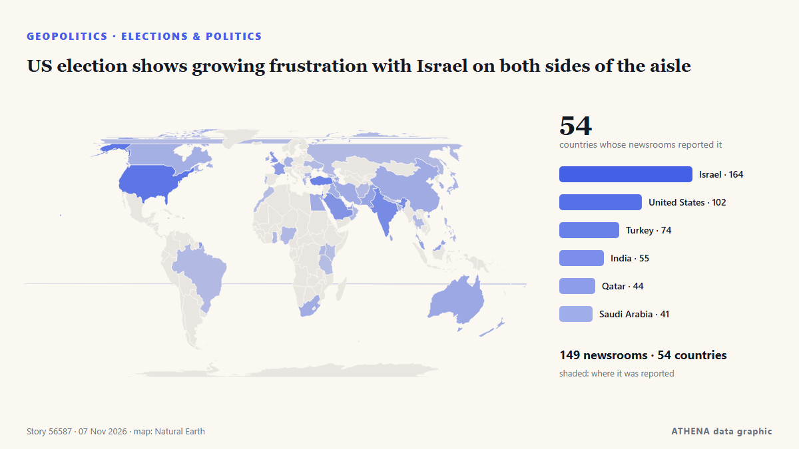

Geopolitik, Politik und Sicherheit
GesponsertPräsentiert von  Cybernetics and Artificial Intelligence Lab Welcome to the Cybernetics and Artificial Intelligence Laboratory, established at the Department of Business Administration of the National and Kapodistrian University of Athens. The lab is headed by Professor Dimitrios Thomakos. The lab aims to do research that can be published in top venues. Our research uses tools and methods of Artificial Intelligence, and lies in the following areas: - Forecasting - Decision making - Cyber security - Finance We are always looking forward to collaborating with exceptional students!
Cybernetics and Artificial Intelligence Lab Welcome to the Cybernetics and Artificial Intelligence Laboratory, established at the Department of Business Administration of the National and Kapodistrian University of Athens. The lab is headed by Professor Dimitrios Thomakos. The lab aims to do research that can be published in top venues. Our research uses tools and methods of Artificial Intelligence, and lies in the following areas: - Forecasting - Decision making - Cyber security - Finance We are always looking forward to collaborating with exceptional students!
Schlagzeilen werden auf Englisch angezeigt, wie veröffentlicht.

Wahlen und PolitikUS election shows growing frustration with Israel on both sides of the aisle
LONDON: It is a measure of how much is at stake in Tuesday’s legislative election in Israel, and how finely balanced the outcome might be, that a record 22,000 police officers have been deployed in… von Arab News
| 25. Okt. | 179 |
|---|---|
| 26. Okt. | 318 |
| 27. Okt. | 278 |
| 28. Okt. | 236 |
| 29. Okt. | 245 |
| 30. Okt. | 287 |
| 31. Okt. | 154 |
| 1. Nov. | 212 |
| 2. Nov. | 316 |
| 3. Nov. | 351 |
| 4. Nov. | 393 |
| 5. Nov. | 318 |
| 6. Nov. | 169 |
| 7. Nov. | 28 |
ANC gets 30% in South Africa’s election, partial results show
Gauteng and KwaZulu-Natal account for 13 of the 20 murders involving political figures and supporters recorded during the election period, as police investigate 139 election-related criminal cases… von IOL
Brazil's Lula mocks Flavio Bolsonaro over Trump's US midterm election defeat
Our experts unpack what Lula’s victory means for Brazil’s ties with Washington and how it could reshape a region trending right. von Atlantic Council
Turkey's parliament ratifies Mecca pact
Opposition Republican People’s Party (CHP) leader Kemal Kılıçdaroğlu has stated his party will vote in favor of a defense agreement between Türkiye, Pakistan and Saudi Arabia when it comes before… von Hürriyet Daily News
US strikes Iran’s Qeshm island – Report
The US has not publicly announced the attacks, so as not to signal any intention of resuming major combat operations, the Wall Street Journal reported. von CNA (Channel NewsAsia)
Israeli strikes in Gaza kill 8, including a child
Five people were killed in Khan Yunis and three in Gaza City, according to Gaza's civil defence service. von Free Malaysia Today
Trump appoints hardliner Stephen Miller as new White House chief of staff after midterm defeat
Trump used The Legend of Zelda to try and promote his accomplishments — after Democrats took back Congress during midterms. von The Independent
Trump says ‘big, beautiful agreement’ on Ukraine ‘might involve all of Europe’
British troops are due to take part in a major Coalition of the Willing military exercise to prepare for potential peace. von Evening Standard (London)
Iranian air defence destroys MQ-9 drone over Qeshm Island, report says
Tehran, IRNA — The Islamic Revolution Guard Corps (IRGC) has announced that another US MQ-1 reconnaissance-combat drone was intercepted and destroyed by a new advanced air defense system in the… von IRNA (English)
Putin puts more Japan Tobacco’s Russian assets under temporary management
All shares in Pereslavl-Tobacco, 100% of the shares in the authorized capital of JTI Innovative Products LLC, and 100% of the shares in the authorized capital of JTI Russia LLC were placed under the… von TASS (English)
Melania Trump urges ‘humanity over war’ with Ukraine, Russia officials
Melania Trump facilitated a meeting between Ukrainian and Russian officials at the White House, calling for a focus on ‘humanity over war.’ This comes as talks are scheduled for the next week in Abu… von Arab News
Trump signs order to preserve Oval Office as national monument
The order comes after Trump made a series of big changes to the decor of the Oval Office and tore down the White House East Wing. von BBC News
Keisha Bottoms makes history as first Black woman elected US governor
Democrat Keisha Lance Bottoms and Republican Rick Jackson are running to be Georgia’s next governor in a race that could reshape control of a crucial battleground state and even make some history… von The National Herald
Pope has voted in the midterms says Vatican
(ANSA) - ROME, 30 OTT - Pope Leo XIV has voted in the US midterm elections, the Vatican said Friday. von ANSA English
Kremlin confirms trilateral talks on Ukraine set for Nov 10-11 in Abu Dhabi
The United States will bring together delegations from Ukraine and Russia in Abu Dhabi on November 10-11 to discuss ending Russia's conflict with Ukraine, post-conflict security agreements and… von CGTN (World)
After JD Vance, now Trump Jr blames Iran war for US midterms defeat
Says war in Iran had weighed on Republican candidates, even as voters backed his handling of it. von Express Tribune
What Americans are saying about how they voted in the midterm elections
Pope Leo XIV, the Catholic Church's first US-born pontiff, has voted in the United States midterm elections, submitting his mail-in ballot in Chicago, the Vatican confirmed. von RTÉ News
Democratic leader Hakeem Jeffries announces bid for US House speaker
'I write to humbly request your support in connection with my candidacy to serve as the next Speaker of the House of Representatives,' says Jeffries in letter. von Anadolu Agency (English)
Kazakhstan president proposes admitting Russia to Organization of Turkic States
Russia’s Digital Development Ministry has proposed cutting off cellular service to smartphones brought in from abroad starting in April 2027 if their owners fail to register them by IMEI number… von Meduza (English)
Massie says his Hegseth impeachment resolution 'much gentler' than what Democrats plan
Republicans now have a small window to advance defense funding priorities before Democrats take control of Capitol Hill. von Breaking Defense
Melania Trump meets with Russian and Ukrainian representatives at the White House
WASHINGTON: First Lady Melania Trump will host “representatives” of Russia and Ukraine in Washington, the White House said Tuesday, without specifying a date or offering further details about who may… von Business Recorder
Trump under pressure on Iran war after Republicans' midterms defeat
US President Donald Trump concedes that the war he ordered on Iran was partly to blame for his Republican Party's sweeping midterms losses -- but even as he comes under pressure, analysts said… von Al-Monitor
Zelensky says hopes US election means more support for Ukraine
Ukraine's President Volodymyr Zelensky has said he hoped the Democrat triumph in the US midterm elections would boost support for Kyiv and help end the war with Russia. von Vanguard
Oil falls for a fourth day on expectations for lower risk of Iran war escalation
Both oil benchmarks closed at their lowest since Aug 31. von The Business Times
Trump says US will end military aid to Israel by end of the year
Says democrats, left-wing politicians using US financial support to Israel as a talking point to criticise Republicans. von Express Tribune
Morocco will ‘uphold Western Sahara ceasefire after UN mission ends’
Morocco will stay committed to the ceasefire in the occupied Western Sahara despite the end of the United Nations peacekeeping mission in the territory, the Royal Palace said on Wednesday. von Cyprus Mail
Trump loses control of Congress
If Republicans lose control of Congress, the rest of his time in office is likely to be consumed by Democratic-led investigations into his administration and his business dealings, and possibly even… von PBS NewsHour
Iran's chief negotiator says Americans voted 'no to war'
Iran's chief negotiator in talks with the US has said that Americans voted "NO TO WAR", after President Donald Trump's Republican Party suffered a stunning defeat in the midterm elections. von MyJoyOnline
Dozens dead and missing after Russian strike on Ukrainian aid centre, officials say
Nov 4 - The death toll from a Russian bombing of an aid distribution point in Ukraine's southeastern Zaporizhzhia region on Monday has risen to 37, with dozens missing, officials said, in one of the… von The Straits Times
Drone attack sparks fire at Ozon logistics centre in Russia’s Adygea
A fire broke out at an Ozon logistics centre in the city of Adygeysk, in Russia’s Republic of Adygea, following a drone attack. von AzerNews
What Trump losing power over Congress means for Iran, Ukraine and foreign policy
Democratic control of Congress could bring greater scrutiny of Trump’s handling of the Iran and Ukraine wars, while leaving him broad foreign-policy powers. von CNBC World